Estimation of tree height using GEDI dataset - Neural Network 1 - 2024
cd /media/sf_LVM_shared/my_SE_data/exercise/
wget https://raw.githubusercontent.com/selvaje/SE_docs/master/source/CASESTUDY/Tree_Height_07FeedForward_Networks_2024.ipynb
source $HOME/venv/bin/activate
pip3 install torch torchvision torchaudio
[1]:
'''
Packages
conda install pytorch torchvision torchaudio cudatoolkit=10.2 -c pytorch
conda install -c anaconda scikit-learn
conda install pandas
'''
import torch
import torch.nn as nn
import numpy as np
import matplotlib.pyplot as plt
import scipy
import pandas as pd
from sklearn.metrics import r2_score
from sklearn.model_selection import train_test_split
from scipy import stats
from scipy.stats import pearsonr
"""
Fix random seeds.
"""
seed=31
torch.manual_seed(seed)
torch.cuda.manual_seed_all(seed)
np.random.seed(seed)
device = torch.device('cuda' if torch.cuda.is_available() else 'cpu')
print('Using device:', device)
/gpfs/gibbs/project/dijk/ahf38/conda_envs/geo_comp2/lib/python3.8/site-packages/tqdm/auto.py:21: TqdmWarning: IProgress not found. Please update jupyter and ipywidgets. See https://ipywidgets.readthedocs.io/en/stable/user_install.html
from .autonotebook import tqdm as notebook_tqdm
Using device: cuda
[2]:
predictors = pd.read_csv("./tree_height_2/txt/eu_x_y_height_predictors_select.txt", sep=" ", index_col=False)
pd.set_option('display.max_columns',None)
# change column name
predictors = predictors.rename({'dev-magnitude':'devmagnitude'} , axis='columns')
predictors.head(10)
[2]:
| ID | X | Y | h | BLDFIE_WeigAver | CECSOL_WeigAver | CHELSA_bio18 | CHELSA_bio4 | convergence | cti | devmagnitude | eastness | elev | forestheight | glad_ard_SVVI_max | glad_ard_SVVI_med | glad_ard_SVVI_min | northness | ORCDRC_WeigAver | outlet_dist_dw_basin | SBIO3_Isothermality_5_15cm | SBIO4_Temperature_Seasonality_5_15cm | treecover | |
|---|---|---|---|---|---|---|---|---|---|---|---|---|---|---|---|---|---|---|---|---|---|---|---|
| 0 | 1 | 6.050001 | 49.727499 | 3139.00 | 1540 | 13 | 2113 | 5893 | -10.486560 | -238043120 | 1.158417 | 0.069094 | 353.983124 | 23 | 276.871094 | 46.444092 | 347.665405 | 0.042500 | 9 | 780403 | 19.798992 | 440.672211 | 85 |
| 1 | 2 | 6.050002 | 49.922155 | 1454.75 | 1491 | 12 | 1993 | 5912 | 33.274361 | -208915344 | -1.755341 | 0.269112 | 267.511688 | 19 | -49.526367 | 19.552734 | -130.541748 | 0.182780 | 16 | 772777 | 20.889412 | 457.756195 | 85 |
| 2 | 3 | 6.050002 | 48.602377 | 853.50 | 1521 | 17 | 2124 | 5983 | 0.045293 | -137479792 | 1.908780 | -0.016055 | 389.751160 | 21 | 93.257324 | 50.743652 | 384.522461 | 0.036253 | 14 | 898820 | 20.695877 | 481.879700 | 62 |
| 3 | 4 | 6.050009 | 48.151979 | 3141.00 | 1526 | 16 | 2569 | 6130 | -33.654274 | -267223072 | 0.965787 | 0.067767 | 380.207703 | 27 | 542.401367 | 202.264160 | 386.156738 | 0.005139 | 15 | 831824 | 19.375000 | 479.410278 | 85 |
| 4 | 5 | 6.050010 | 49.588410 | 2065.25 | 1547 | 14 | 2108 | 5923 | 27.493824 | -107809368 | -0.162624 | 0.014065 | 308.042786 | 25 | 136.048340 | 146.835205 | 198.127441 | 0.028847 | 17 | 796962 | 18.777500 | 457.880066 | 85 |
| 5 | 6 | 6.050014 | 48.608456 | 1246.50 | 1515 | 19 | 2124 | 6010 | -1.602039 | 17384282 | 1.447979 | -0.018912 | 364.527100 | 18 | 221.339844 | 247.387207 | 480.387939 | 0.042747 | 14 | 897945 | 19.398880 | 474.331329 | 62 |
| 6 | 7 | 6.050016 | 48.571401 | 2938.75 | 1520 | 19 | 2169 | 6147 | 27.856503 | -66516432 | -1.073956 | 0.002280 | 254.679596 | 19 | 125.250488 | 87.865234 | 160.696777 | 0.037254 | 11 | 908426 | 20.170450 | 476.414520 | 96 |
| 7 | 8 | 6.050019 | 49.921613 | 3294.75 | 1490 | 12 | 1995 | 5912 | 22.102139 | -297770784 | -1.402633 | 0.309765 | 294.927765 | 26 | -86.729492 | -145.584229 | -190.062988 | 0.222435 | 15 | 772784 | 20.855963 | 457.195404 | 86 |
| 8 | 9 | 6.050020 | 48.822645 | 1623.50 | 1554 | 18 | 1973 | 6138 | 18.496584 | -25336536 | -0.800016 | 0.010370 | 240.493759 | 22 | -51.470703 | -245.886719 | 172.074707 | 0.004428 | 8 | 839132 | 21.812290 | 496.231110 | 64 |
| 9 | 10 | 6.050024 | 49.847522 | 1400.00 | 1521 | 15 | 2187 | 5886 | -5.660453 | -278652608 | 1.477951 | -0.068720 | 376.671143 | 12 | 277.297363 | 273.141846 | -138.895996 | 0.098817 | 13 | 768873 | 21.137711 | 466.976685 | 70 |
[3]:
bins = np.linspace(min(predictors['h']),max(predictors['h']),100)
plt.hist((predictors['h']),bins,alpha=0.8);
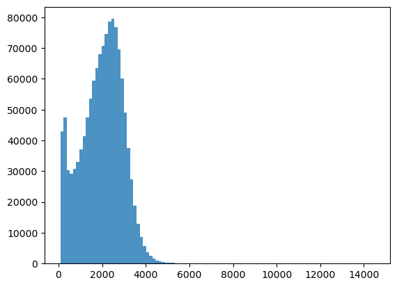
[4]:
predictors_sel = predictors.loc[(predictors['h'] < 7000) ].sample(100000)
predictors_sel.insert ( 4, 'hm' , predictors_sel['h']/100 ) # add a culumn of heigh in meter
len(predictors_sel)
predictors_sel.head(10)
[4]:
| ID | X | Y | h | hm | BLDFIE_WeigAver | CECSOL_WeigAver | CHELSA_bio18 | CHELSA_bio4 | convergence | cti | devmagnitude | eastness | elev | forestheight | glad_ard_SVVI_max | glad_ard_SVVI_med | glad_ard_SVVI_min | northness | ORCDRC_WeigAver | outlet_dist_dw_basin | SBIO3_Isothermality_5_15cm | SBIO4_Temperature_Seasonality_5_15cm | treecover | |
|---|---|---|---|---|---|---|---|---|---|---|---|---|---|---|---|---|---|---|---|---|---|---|---|---|
| 706027 | 706028 | 8.142676 | 49.473039 | 2192.25 | 21.9225 | 1506 | 12 | 1951 | 6332 | 33.326790 | -123652624 | -0.773497 | -0.098556 | 264.291107 | 20 | -124.898438 | -166.341064 | -138.483887 | -0.033544 | 11 | 670987 | 17.290588 | 461.153107 | 85 |
| 311603 | 311604 | 7.013065 | 49.703660 | 343.00 | 3.4300 | 1384 | 12 | 2356 | 5661 | -25.426283 | -245676352 | 2.994771 | 0.006374 | 654.403931 | 5 | 1108.965820 | 746.828125 | 661.711182 | -0.050651 | 21 | 817030 | 23.282337 | 414.707062 | 75 |
| 678298 | 678299 | 7.976119 | 48.864294 | 2000.75 | 20.0075 | 1509 | 11 | 2297 | 6539 | 39.657501 | 712222848 | -1.524940 | 0.000425 | 128.738113 | 14 | 633.487549 | 503.831787 | 528.050537 | 0.004593 | 9 | 760668 | 19.584862 | 497.715546 | 78 |
| 574438 | 574439 | 7.675911 | 48.970574 | 2450.00 | 24.5000 | 1519 | 14 | 2393 | 6316 | 25.545052 | 45228972 | -0.508573 | 0.016525 | 269.375000 | 26 | 844.863037 | 247.661865 | 466.090088 | 0.038866 | 8 | 812785 | 17.917974 | 465.584839 | 99 |
| 629555 | 629556 | 7.832786 | 49.434854 | 1655.75 | 16.5575 | 1501 | 11 | 1894 | 6390 | -1.106694 | -329245536 | 0.693265 | -0.175357 | 305.205170 | 25 | 69.657959 | 59.458008 | -60.963135 | -0.101222 | 8 | 641305 | 18.297518 | 458.570312 | 85 |
| 24779 | 24780 | 6.120472 | 49.359733 | 2131.00 | 21.3100 | 1537 | 18 | 1997 | 6106 | -5.047365 | -169883136 | -1.281423 | -0.060032 | 194.458313 | 23 | 118.437012 | 52.685547 | 278.717041 | 0.020525 | 6 | 764430 | 21.795704 | 478.565186 | 87 |
| 1131458 | 1131459 | 9.422926 | 49.091389 | 2697.25 | 26.9725 | 1524 | 11 | 2720 | 6380 | 48.204334 | 207834704 | -0.667805 | -0.053927 | 439.546326 | 24 | 120.082275 | 98.926758 | -173.800537 | 0.030877 | 7 | 861697 | 18.758785 | 467.858246 | 87 |
| 55515 | 55516 | 6.236967 | 49.744940 | 1998.00 | 19.9800 | 1522 | 12 | 2220 | 5868 | 13.136125 | -241940960 | 0.944569 | 0.107422 | 360.844513 | 25 | 35.600098 | 79.752441 | 287.183594 | -0.032823 | 20 | 743874 | 19.420862 | 445.672028 | 85 |
| 768590 | 768591 | 8.487635 | 48.828276 | 2386.00 | 23.8600 | 1498 | 17 | 2951 | 6406 | 6.318799 | 1560159 | 0.223795 | -0.078058 | 438.207855 | 25 | -58.626709 | -98.312988 | -243.423584 | -0.035823 | 15 | 756191 | 20.880857 | 475.791046 | 85 |
| 290850 | 290851 | 6.965025 | 49.931148 | 357.00 | 3.5700 | 1501 | 14 | 1955 | 6328 | 31.918867 | -176713840 | -1.974737 | 0.077967 | 145.118774 | 20 | 97.752930 | 123.906006 | -152.656982 | 0.136252 | 13 | 619283 | 20.002157 | 472.414703 | 85 |
[5]:
bins = np.linspace(min(predictors_sel['hm']),max(predictors_sel['hm']),100)
plt.hist((predictors_sel['hm']),bins,alpha=0.8);
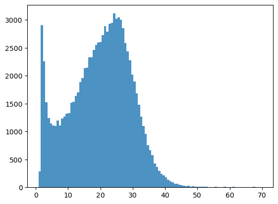
[6]:
# What we are trying to beat
y_true = predictors_sel['h']
y_pred = predictors_sel['forestheight']
slope, intercept, r_value, p_value, std_err = scipy.stats.linregress(y_pred, y_true)
fig,ax=plt.subplots(1,1,figsize=(5,5))
ax.scatter(y_pred, y_true)
ax.set_xlabel('Prediction')
ax.set_ylabel('True')
ax.set_title('slope: {:.4f}, r_value: {:.4f}'.format(slope, r_value))
plt.show()
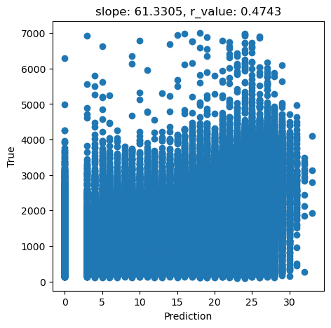
[7]:
tree_height = predictors_sel['hm'].to_numpy()
data = predictors_sel.drop(columns=['ID','h', 'hm','forestheight'], axis=1)
[8]:
#Explore the raw data
n_plots_x = int(np.ceil(np.sqrt(data.shape[1])))
n_plots_y = int(np.floor(np.sqrt(data.shape[1])))
print('data.shape[1]: {}, n_plots_x: {},n_plots_y: {}'.format(data.shape[1],n_plots_x,n_plots_y))
fig, ax = plt.subplots(n_plots_x, n_plots_y, figsize=(15, 10), dpi=100, facecolor='w', edgecolor='k')
ax=ax.ravel()
for idx in range(data.shape[1]):
ax[idx].hist(data.iloc[:, idx].to_numpy().flatten())
ax[idx].set_title(data.columns[idx])
fig.tight_layout()
data.shape[1]: 20, n_plots_x: 5,n_plots_y: 4
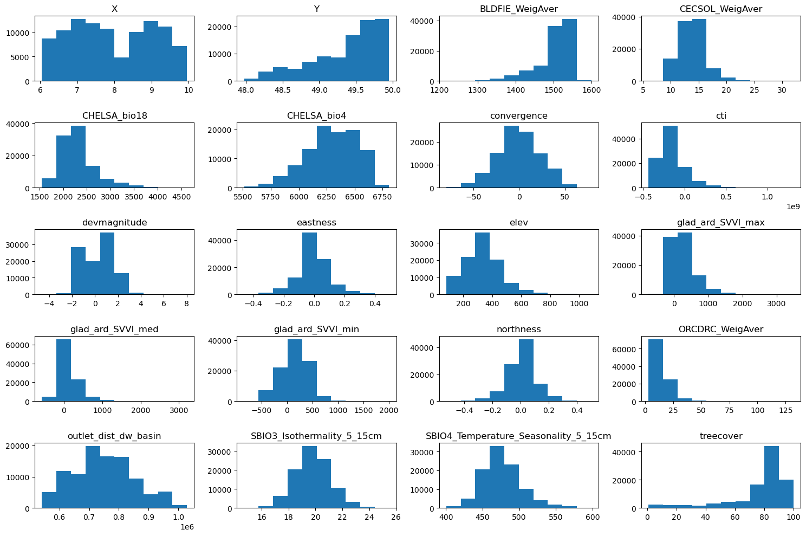
Since our target variable is highly skewed, let’s use a power transformation to make it more normal-like. Check this blog for other commonly used power transformations
[9]:
from sklearn.preprocessing import QuantileTransformer
from sklearn.preprocessing import MinMaxScaler
scaler = MinMaxScaler()
qt = QuantileTransformer(
n_quantiles=500, output_distribution="normal", random_state=0
)
tree_height = qt.fit_transform(tree_height.reshape(-1,1))
scaler_tree = MinMaxScaler(feature_range=(-1,1))
tree_height = scaler_tree.fit_transform(tree_height).squeeze()
tree_height =tree_height/np.quantile(tree_height,0.99)
plt.hist(tree_height,50)
[9]:
(array([2.000e+00, 0.000e+00, 0.000e+00, 0.000e+00, 0.000e+00, 0.000e+00,
0.000e+00, 0.000e+00, 0.000e+00, 5.000e+00, 1.060e+02, 1.900e+02,
3.670e+02, 4.730e+02, 7.720e+02, 1.152e+03, 1.490e+03, 2.502e+03,
3.213e+03, 4.129e+03, 5.043e+03, 6.236e+03, 6.872e+03, 8.668e+03,
8.159e+03, 8.413e+03, 8.249e+03, 7.757e+03, 6.651e+03, 5.468e+03,
3.980e+03, 3.010e+03, 2.322e+03, 1.635e+03, 1.269e+03, 8.220e+02,
4.610e+02, 2.880e+02, 1.350e+02, 9.700e+01, 3.300e+01, 1.200e+01,
9.000e+00, 0.000e+00, 1.000e+00, 0.000e+00, 0.000e+00, 0.000e+00,
0.000e+00, 9.000e+00]),
array([-2.25692362e+00, -2.16664668e+00, -2.07636973e+00, -1.98609279e+00,
-1.89581584e+00, -1.80553890e+00, -1.71526195e+00, -1.62498501e+00,
-1.53470806e+00, -1.44443112e+00, -1.35415417e+00, -1.26387723e+00,
-1.17360028e+00, -1.08332334e+00, -9.93046394e-01, -9.02769449e-01,
-8.12492504e-01, -7.22215559e-01, -6.31938615e-01, -5.41661670e-01,
-4.51384725e-01, -3.61107780e-01, -2.70830835e-01, -1.80553890e-01,
-9.02769449e-02, 4.44089210e-16, 9.02769449e-02, 1.80553890e-01,
2.70830835e-01, 3.61107780e-01, 4.51384725e-01, 5.41661670e-01,
6.31938615e-01, 7.22215559e-01, 8.12492504e-01, 9.02769449e-01,
9.93046394e-01, 1.08332334e+00, 1.17360028e+00, 1.26387723e+00,
1.35415417e+00, 1.44443112e+00, 1.53470806e+00, 1.62498501e+00,
1.71526195e+00, 1.80553890e+00, 1.89581584e+00, 1.98609279e+00,
2.07636973e+00, 2.16664668e+00, 2.25692362e+00]),
<BarContainer object of 50 artists>)
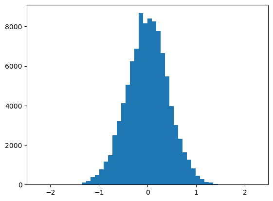
[10]:
#Normalize the data
scaler_data = MinMaxScaler()
data_transformed = scaler_data.fit_transform(data)
n_plots_x = int(np.ceil(np.sqrt(data.shape[1])))
n_plots_y = int(np.floor(np.sqrt(data.shape[1])))
print('data.shape[1]: {}, n_plots_x: {},n_plots_y: {}'.format(data.shape[1],n_plots_x,n_plots_y))
fig, ax = plt.subplots(n_plots_x, n_plots_y, figsize=(15, 10), dpi=100, facecolor='w', edgecolor='k')
ax=ax.ravel()
for idx in range(data.shape[1]):
ax[idx].hist(data_transformed[:,idx].flatten())
ax[idx].set_title(data.columns[idx])
fig.tight_layout()
data.shape[1]: 20, n_plots_x: 5,n_plots_y: 4
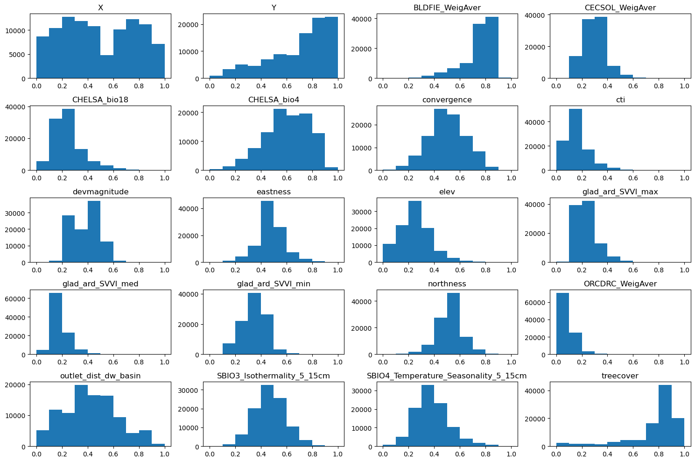
[11]:
# Let's use all the data as one big minibatch
#Split the data
X_train, X_test, y_train, y_test = train_test_split(data_transformed,tree_height, test_size=0.30, random_state=0)
X_train = torch.FloatTensor(X_train)
y_train = torch.FloatTensor(y_train)
X_test = torch.FloatTensor(X_test)
y_test = torch.FloatTensor(y_test)
print('X_train.shape: {}, X_test.shape: {}, y_train.shape: {}, y_test.shape: {}'.format(X_train.shape, X_test.shape, y_train.shape, y_test.shape))
print('X_train.min: {}, X_test.min: {}, y_train.min: {}, y_test.min: {}'.format(X_train.min(), X_test.min(), y_train.min(), y_test.min()))
print('X_train.max: {}, X_test.max: {}, y_train.max: {}, y_test.max: {}'.format(X_train.max(), X_test.max(), y_train.max(), y_test.max()))
X_train.shape: torch.Size([70000, 20]), X_test.shape: torch.Size([30000, 20]), y_train.shape: torch.Size([70000]), y_test.shape: torch.Size([30000])
X_train.min: 0.0, X_test.min: 0.0, y_train.min: -2.2569236755371094, y_test.min: -2.2569236755371094
X_train.max: 1.0, X_test.max: 1.0, y_train.max: 2.2569236755371094, y_test.max: 2.2569236755371094
[12]:
# Try with FF
class Feedforward(torch.nn.Module):
def __init__(self, input_size, hidden_size):
super(Feedforward, self).__init__()
self.input_size = input_size
self.hidden_size = hidden_size
self.fc1 = torch.nn.Linear(self.input_size, self.hidden_size)
self.fc2 = torch.nn.Linear(self.hidden_size, self.hidden_size)
self.relu = torch.nn.ReLU()
self.fc3 = torch.nn.Linear(self.hidden_size, 1)
self.sigmoid = torch.nn.Sigmoid()
self.tanh = torch.nn.Tanh()
def forward(self, x):
hidden = self.relu(self.fc1(x))
hidden = self.relu(self.fc2(hidden))
output = self.tanh(self.fc3(hidden))
return output
[13]:
# model.train()
epoch = 10000
hid_dim_range = [128,256,512]
lr_range = [0.75,0.5,0.1,0.01,0.05]
for hid_dim in hid_dim_range:
for lr in lr_range:
print('\nhid_dim: {}, lr: {}'.format(hid_dim, lr))
if 'model' in globals():
print('Deleting previous model')
del model, criterion, optimizer
model = Feedforward(data.shape[1], hid_dim).to(device)
criterion = torch.nn.MSELoss()
optimizer = torch.optim.SGD(model.parameters(), lr = lr)
all_loss_train=[]
all_loss_val=[]
all_r_train=[]
all_r_val=[]
for epoch in range(epoch):
model.train()
optimizer.zero_grad()
# Forward pass
y_pred = model(X_train.to(device))
# Compute Loss
loss = criterion(y_pred.squeeze(), y_train.to(device))
# Backward pass
loss.backward()
optimizer.step()
all_loss_train.append(loss.item())
y_pred = y_pred.cpu().detach().numpy().squeeze()
_, _, r_value_train, _, _ = scipy.stats.linregress(y_pred, y_train)
all_r_train.append(r_value_train)
model.eval()
with torch.no_grad():
y_pred = model(X_test.to(device))
# Compute Loss
loss = criterion(y_pred.squeeze(), y_test.to(device))
all_loss_val.append(loss.item())
y_pred = y_pred.cpu().detach().numpy().squeeze()
slope, intercept, r_value, p_value, std_err = scipy.stats.linregress(y_pred, y_test)
all_r_val.append(r_value)
# r_value2 = pearsonr(y_pred, y_test)[0]
if epoch%500==0:
print('Epoch {}, train_loss: {:.4f}, val_loss: {:.4f}, r_value: {:.4f}'.format(epoch,all_loss_train[-1],all_loss_val[-1],r_value))
fig,ax=plt.subplots(1,3,figsize=(15,5))
ax[0].plot(np.log10(all_loss_train))
ax[0].plot(np.log10(all_loss_val))
ax[0].set_title('Loss')
ax[1].plot(all_r_train)
ax[1].plot(all_r_val)
ax[1].set_title('Pearson Corr')
ax[2].scatter(y_pred, y_test.cpu())
ax[2].set_xlabel('Prediction')
ax[2].set_ylabel('True')
ax[2].set_title('slope: {:.4f}, r_value: {:.4f}'.format(slope, r_value))
plt.show()
hid_dim: 128, lr: 0.75
Epoch 0, train_loss: 0.1980, val_loss: 0.2900, r_value: 0.1720
Epoch 500, train_loss: 0.1546, val_loss: 0.1568, r_value: 0.4467
Epoch 1000, train_loss: 0.1511, val_loss: 0.1527, r_value: 0.4671
Epoch 1500, train_loss: 0.1482, val_loss: 0.1495, r_value: 0.4792
Epoch 2000, train_loss: 0.1463, val_loss: 0.1477, r_value: 0.4872
Epoch 2500, train_loss: 0.1407, val_loss: 0.1433, r_value: 0.4914
Epoch 3000, train_loss: 0.1458, val_loss: 0.1472, r_value: 0.4819
Epoch 3500, train_loss: 0.1445, val_loss: 0.1462, r_value: 0.4892
Epoch 4000, train_loss: 0.1436, val_loss: 0.1454, r_value: 0.4950
Epoch 4500, train_loss: 0.1426, val_loss: 0.1438, r_value: 0.5006
Epoch 5000, train_loss: 0.1389, val_loss: 0.1423, r_value: 0.5012
Epoch 5500, train_loss: 0.1377, val_loss: 0.1394, r_value: 0.5113
Epoch 6000, train_loss: 0.1382, val_loss: 0.1422, r_value: 0.5141
Epoch 6500, train_loss: 0.1336, val_loss: 0.1358, r_value: 0.5133
Epoch 7000, train_loss: 0.1338, val_loss: 0.1368, r_value: 0.5164
Epoch 7500, train_loss: 0.1378, val_loss: 0.1417, r_value: 0.5148
Epoch 8000, train_loss: 0.1392, val_loss: 0.1430, r_value: 0.5201
Epoch 8500, train_loss: 0.1382, val_loss: 0.1420, r_value: 0.5211
Epoch 9000, train_loss: 0.1376, val_loss: 0.1403, r_value: 0.5209
Epoch 9500, train_loss: 0.1366, val_loss: 0.1403, r_value: 0.5226
hid_dim: 128, lr: 0.5
Deleting previous model
Epoch 0, train_loss: 0.1866, val_loss: 0.1999, r_value: 0.3091
Epoch 500, train_loss: 0.1477, val_loss: 0.1487, r_value: 0.4653
Epoch 1000, train_loss: 0.1440, val_loss: 0.1456, r_value: 0.4816
Epoch 1500, train_loss: 0.1419, val_loss: 0.1436, r_value: 0.4917
Epoch 2000, train_loss: 0.1403, val_loss: 0.1421, r_value: 0.4993
Epoch 2500, train_loss: 0.1391, val_loss: 0.1409, r_value: 0.5051
Epoch 3000, train_loss: 0.1377, val_loss: 0.1395, r_value: 0.5096
Epoch 3500, train_loss: 0.1371, val_loss: 0.1390, r_value: 0.5098
Epoch 4000, train_loss: 0.1368, val_loss: 0.1389, r_value: 0.5144
Epoch 4500, train_loss: 0.1380, val_loss: 0.1401, r_value: 0.5093
Epoch 5000, train_loss: 0.1360, val_loss: 0.1386, r_value: 0.5160
Epoch 5500, train_loss: 0.1337, val_loss: 0.1358, r_value: 0.5164
Epoch 6000, train_loss: 0.1358, val_loss: 0.1387, r_value: 0.5192
Epoch 6500, train_loss: 0.1350, val_loss: 0.1380, r_value: 0.5205
Epoch 7000, train_loss: 0.1338, val_loss: 0.1367, r_value: 0.5217
Epoch 7500, train_loss: 0.1321, val_loss: 0.1355, r_value: 0.5164
Epoch 8000, train_loss: 0.1341, val_loss: 0.1377, r_value: 0.5230
Epoch 8500, train_loss: 0.1334, val_loss: 0.1369, r_value: 0.5225
Epoch 9000, train_loss: 0.1308, val_loss: 0.1349, r_value: 0.5198
Epoch 9500, train_loss: 0.1303, val_loss: 0.1349, r_value: 0.5200
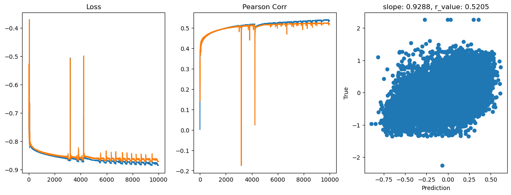
hid_dim: 128, lr: 0.1
Deleting previous model
Epoch 0, train_loss: 0.1887, val_loss: 0.1855, r_value: 0.0150
Epoch 500, train_loss: 0.1459, val_loss: 0.1473, r_value: 0.4486
Epoch 1000, train_loss: 0.1443, val_loss: 0.1458, r_value: 0.4577
Epoch 1500, train_loss: 0.1433, val_loss: 0.1448, r_value: 0.4634
Epoch 2000, train_loss: 0.1430, val_loss: 0.1444, r_value: 0.4679
Epoch 2500, train_loss: 0.1423, val_loss: 0.1437, r_value: 0.4719
Epoch 3000, train_loss: 0.1417, val_loss: 0.1431, r_value: 0.4754
Epoch 3500, train_loss: 0.1412, val_loss: 0.1426, r_value: 0.4786
Epoch 4000, train_loss: 0.1406, val_loss: 0.1420, r_value: 0.4817
Epoch 4500, train_loss: 0.1401, val_loss: 0.1415, r_value: 0.4845
Epoch 5000, train_loss: 0.1397, val_loss: 0.1411, r_value: 0.4872
Epoch 5500, train_loss: 0.1392, val_loss: 0.1407, r_value: 0.4896
Epoch 6000, train_loss: 0.1388, val_loss: 0.1403, r_value: 0.4920
Epoch 6500, train_loss: 0.1383, val_loss: 0.1399, r_value: 0.4942
Epoch 7000, train_loss: 0.1380, val_loss: 0.1395, r_value: 0.4962
Epoch 7500, train_loss: 0.1376, val_loss: 0.1392, r_value: 0.4981
Epoch 8000, train_loss: 0.1372, val_loss: 0.1389, r_value: 0.4999
Epoch 8500, train_loss: 0.1369, val_loss: 0.1386, r_value: 0.5016
Epoch 9000, train_loss: 0.1365, val_loss: 0.1383, r_value: 0.5031
Epoch 9500, train_loss: 0.1362, val_loss: 0.1380, r_value: 0.5045
hid_dim: 128, lr: 0.01
Deleting previous model
Epoch 0, train_loss: 0.1791, val_loss: 0.1808, r_value: 0.3447
Epoch 500, train_loss: 0.1681, val_loss: 0.1699, r_value: 0.3934
Epoch 1000, train_loss: 0.1578, val_loss: 0.1595, r_value: 0.4126
Epoch 1500, train_loss: 0.1514, val_loss: 0.1532, r_value: 0.4245
Epoch 2000, train_loss: 0.1488, val_loss: 0.1505, r_value: 0.4325
Epoch 2500, train_loss: 0.1476, val_loss: 0.1492, r_value: 0.4380
Epoch 3000, train_loss: 0.1469, val_loss: 0.1485, r_value: 0.4418
Epoch 3500, train_loss: 0.1464, val_loss: 0.1480, r_value: 0.4448
Epoch 4000, train_loss: 0.1461, val_loss: 0.1475, r_value: 0.4471
Epoch 4500, train_loss: 0.1457, val_loss: 0.1472, r_value: 0.4491
Epoch 5000, train_loss: 0.1455, val_loss: 0.1469, r_value: 0.4509
Epoch 5500, train_loss: 0.1452, val_loss: 0.1467, r_value: 0.4524
Epoch 6000, train_loss: 0.1450, val_loss: 0.1465, r_value: 0.4537
Epoch 6500, train_loss: 0.1448, val_loss: 0.1463, r_value: 0.4548
Epoch 7000, train_loss: 0.1447, val_loss: 0.1461, r_value: 0.4558
Epoch 7500, train_loss: 0.1445, val_loss: 0.1459, r_value: 0.4567
Epoch 8000, train_loss: 0.1444, val_loss: 0.1458, r_value: 0.4575
Epoch 8500, train_loss: 0.1443, val_loss: 0.1457, r_value: 0.4582
Epoch 9000, train_loss: 0.1442, val_loss: 0.1456, r_value: 0.4589
Epoch 9500, train_loss: 0.1441, val_loss: 0.1455, r_value: 0.4595
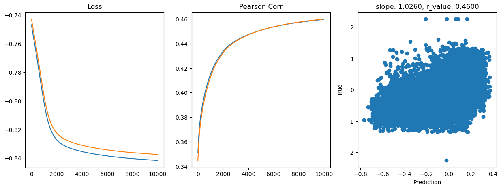
hid_dim: 128, lr: 0.05
Deleting previous model
Epoch 0, train_loss: 0.1842, val_loss: 0.1845, r_value: 0.0583
Epoch 500, train_loss: 0.1472, val_loss: 0.1486, r_value: 0.4409
Epoch 1000, train_loss: 0.1458, val_loss: 0.1472, r_value: 0.4490
Epoch 1500, train_loss: 0.1451, val_loss: 0.1465, r_value: 0.4534
Epoch 2000, train_loss: 0.1445, val_loss: 0.1459, r_value: 0.4567
Epoch 2500, train_loss: 0.1441, val_loss: 0.1455, r_value: 0.4592
Epoch 3000, train_loss: 0.1437, val_loss: 0.1451, r_value: 0.4614
Epoch 3500, train_loss: 0.1433, val_loss: 0.1448, r_value: 0.4634
Epoch 4000, train_loss: 0.1430, val_loss: 0.1444, r_value: 0.4654
Epoch 4500, train_loss: 0.1427, val_loss: 0.1441, r_value: 0.4676
Epoch 5000, train_loss: 0.1423, val_loss: 0.1437, r_value: 0.4696
Epoch 5500, train_loss: 0.1420, val_loss: 0.1434, r_value: 0.4716
Epoch 6000, train_loss: 0.1416, val_loss: 0.1430, r_value: 0.4737
Epoch 6500, train_loss: 0.1413, val_loss: 0.1427, r_value: 0.4757
Epoch 7000, train_loss: 0.1409, val_loss: 0.1423, r_value: 0.4776
Epoch 7500, train_loss: 0.1406, val_loss: 0.1420, r_value: 0.4796
Epoch 8000, train_loss: 0.1402, val_loss: 0.1417, r_value: 0.4815
Epoch 8500, train_loss: 0.1399, val_loss: 0.1413, r_value: 0.4833
Epoch 9000, train_loss: 0.1396, val_loss: 0.1410, r_value: 0.4850
Epoch 9500, train_loss: 0.1393, val_loss: 0.1407, r_value: 0.4866
hid_dim: 256, lr: 0.75
Deleting previous model
Epoch 0, train_loss: 0.1870, val_loss: 0.2367, r_value: 0.0894
Epoch 500, train_loss: 0.1555, val_loss: 0.1558, r_value: 0.4674
Epoch 1000, train_loss: 0.1504, val_loss: 0.1517, r_value: 0.4843
Epoch 1500, train_loss: 0.1471, val_loss: 0.1489, r_value: 0.4943
Epoch 2000, train_loss: 0.1444, val_loss: 0.1456, r_value: 0.5017
Epoch 2500, train_loss: 0.1436, val_loss: 0.1441, r_value: 0.5048
Epoch 3000, train_loss: 0.1441, val_loss: 0.1448, r_value: 0.5066
Epoch 3500, train_loss: 0.1403, val_loss: 0.1427, r_value: 0.5131
Epoch 4000, train_loss: 0.1394, val_loss: 0.1422, r_value: 0.5156
Epoch 4500, train_loss: 0.1385, val_loss: 0.1416, r_value: 0.5178
Epoch 5000, train_loss: 0.1377, val_loss: 0.1411, r_value: 0.5197
Epoch 5500, train_loss: 0.1371, val_loss: 0.1407, r_value: 0.5214
Epoch 6000, train_loss: 0.1365, val_loss: 0.1404, r_value: 0.5229
Epoch 6500, train_loss: 0.1361, val_loss: 0.1402, r_value: 0.5241
Epoch 7000, train_loss: 0.1356, val_loss: 0.1400, r_value: 0.5252
Epoch 7500, train_loss: 0.1352, val_loss: 0.1399, r_value: 0.5262
Epoch 8000, train_loss: 0.1348, val_loss: 0.1399, r_value: 0.5270
Epoch 8500, train_loss: 0.1345, val_loss: 0.1399, r_value: 0.5277
Epoch 9000, train_loss: 0.1342, val_loss: 0.1400, r_value: 0.5284
Epoch 9500, train_loss: 0.1338, val_loss: 0.1401, r_value: 0.5289
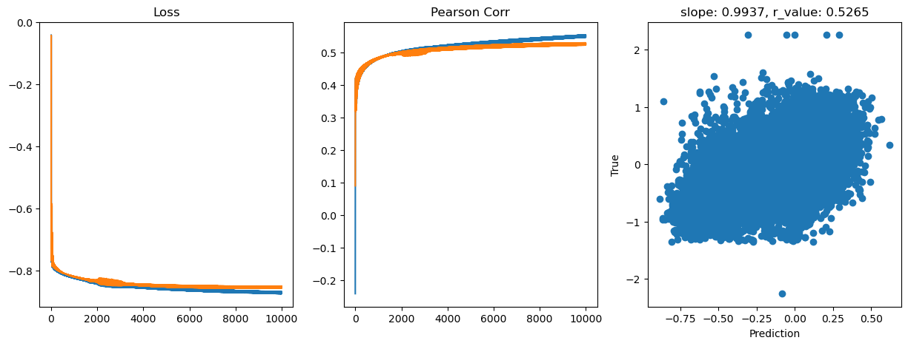
hid_dim: 256, lr: 0.5
Deleting previous model
Epoch 0, train_loss: 0.1936, val_loss: 0.3296, r_value: 0.2721
Epoch 500, train_loss: 0.1466, val_loss: 0.1482, r_value: 0.4627
Epoch 1000, train_loss: 0.1427, val_loss: 0.1440, r_value: 0.4830
Epoch 1500, train_loss: 0.1407, val_loss: 0.1422, r_value: 0.4936
Epoch 2000, train_loss: 0.1393, val_loss: 0.1410, r_value: 0.5011
Epoch 2500, train_loss: 0.1380, val_loss: 0.1399, r_value: 0.5062
Epoch 3000, train_loss: 0.1369, val_loss: 0.1392, r_value: 0.5100
Epoch 3500, train_loss: 0.1348, val_loss: 0.1377, r_value: 0.5107
Epoch 4000, train_loss: 0.1340, val_loss: 0.1358, r_value: 0.5176
Epoch 4500, train_loss: 0.1344, val_loss: 0.1375, r_value: 0.5164
Epoch 5000, train_loss: 0.1360, val_loss: 0.1410, r_value: 0.5194
Epoch 5500, train_loss: 0.1333, val_loss: 0.1354, r_value: 0.5185
Epoch 6000, train_loss: 0.1341, val_loss: 0.1375, r_value: 0.5242
Epoch 6500, train_loss: 0.1342, val_loss: 0.1379, r_value: 0.5253
Epoch 7000, train_loss: 0.1312, val_loss: 0.1348, r_value: 0.5262
Epoch 7500, train_loss: 0.1301, val_loss: 0.1340, r_value: 0.5241
Epoch 8000, train_loss: 0.1322, val_loss: 0.1366, r_value: 0.5278
Epoch 8500, train_loss: 0.1335, val_loss: 0.1368, r_value: 0.5280
Epoch 9000, train_loss: 0.1322, val_loss: 0.1373, r_value: 0.5289
Epoch 9500, train_loss: 0.1326, val_loss: 0.1379, r_value: 0.5293

hid_dim: 256, lr: 0.1
Deleting previous model
Epoch 0, train_loss: 0.1813, val_loss: 0.1823, r_value: 0.1569
Epoch 500, train_loss: 0.1457, val_loss: 0.1469, r_value: 0.4549
Epoch 1000, train_loss: 0.1439, val_loss: 0.1452, r_value: 0.4630
Epoch 1500, train_loss: 0.1429, val_loss: 0.1442, r_value: 0.4684
Epoch 2000, train_loss: 0.1421, val_loss: 0.1434, r_value: 0.4733
Epoch 2500, train_loss: 0.1412, val_loss: 0.1425, r_value: 0.4780
Epoch 3000, train_loss: 0.1405, val_loss: 0.1419, r_value: 0.4824
Epoch 3500, train_loss: 0.1399, val_loss: 0.1413, r_value: 0.4863
Epoch 4000, train_loss: 0.1393, val_loss: 0.1407, r_value: 0.4898
Epoch 4500, train_loss: 0.1386, val_loss: 0.1401, r_value: 0.4931
Epoch 5000, train_loss: 0.1381, val_loss: 0.1396, r_value: 0.4960
Epoch 5500, train_loss: 0.1376, val_loss: 0.1391, r_value: 0.4986
Epoch 6000, train_loss: 0.1371, val_loss: 0.1387, r_value: 0.5009
Epoch 6500, train_loss: 0.1366, val_loss: 0.1383, r_value: 0.5031
Epoch 7000, train_loss: 0.1361, val_loss: 0.1379, r_value: 0.5051
Epoch 7500, train_loss: 0.1357, val_loss: 0.1376, r_value: 0.5068
Epoch 8000, train_loss: 0.1354, val_loss: 0.1373, r_value: 0.5083
Epoch 8500, train_loss: 0.1350, val_loss: 0.1370, r_value: 0.5097
Epoch 9000, train_loss: 0.1347, val_loss: 0.1367, r_value: 0.5109
Epoch 9500, train_loss: 0.1344, val_loss: 0.1365, r_value: 0.5120
hid_dim: 256, lr: 0.01
Deleting previous model
Epoch 0, train_loss: 0.1809, val_loss: 0.1824, r_value: 0.2568
Epoch 500, train_loss: 0.1574, val_loss: 0.1590, r_value: 0.4312
Epoch 1000, train_loss: 0.1492, val_loss: 0.1507, r_value: 0.4361
Epoch 1500, train_loss: 0.1473, val_loss: 0.1487, r_value: 0.4412
Epoch 2000, train_loss: 0.1465, val_loss: 0.1480, r_value: 0.4450
Epoch 2500, train_loss: 0.1460, val_loss: 0.1475, r_value: 0.4476
Epoch 3000, train_loss: 0.1457, val_loss: 0.1471, r_value: 0.4498
Epoch 3500, train_loss: 0.1454, val_loss: 0.1468, r_value: 0.4518
Epoch 4000, train_loss: 0.1451, val_loss: 0.1465, r_value: 0.4536
Epoch 4500, train_loss: 0.1448, val_loss: 0.1462, r_value: 0.4551
Epoch 5000, train_loss: 0.1446, val_loss: 0.1460, r_value: 0.4564
Epoch 5500, train_loss: 0.1444, val_loss: 0.1458, r_value: 0.4576
Epoch 6000, train_loss: 0.1442, val_loss: 0.1456, r_value: 0.4587
Epoch 6500, train_loss: 0.1440, val_loss: 0.1454, r_value: 0.4598
Epoch 7000, train_loss: 0.1439, val_loss: 0.1453, r_value: 0.4607
Epoch 7500, train_loss: 0.1437, val_loss: 0.1451, r_value: 0.4616
Epoch 8000, train_loss: 0.1436, val_loss: 0.1450, r_value: 0.4624
Epoch 8500, train_loss: 0.1434, val_loss: 0.1448, r_value: 0.4631
Epoch 9000, train_loss: 0.1433, val_loss: 0.1447, r_value: 0.4638
Epoch 9500, train_loss: 0.1432, val_loss: 0.1446, r_value: 0.4645
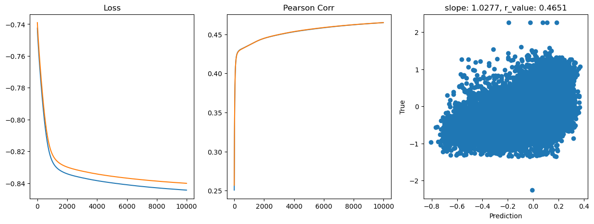
hid_dim: 256, lr: 0.05
Deleting previous model
Epoch 0, train_loss: 0.1823, val_loss: 0.1836, r_value: 0.1037
Epoch 500, train_loss: 0.1465, val_loss: 0.1480, r_value: 0.4446
Epoch 1000, train_loss: 0.1450, val_loss: 0.1465, r_value: 0.4536
Epoch 1500, train_loss: 0.1441, val_loss: 0.1456, r_value: 0.4588
Epoch 2000, train_loss: 0.1435, val_loss: 0.1449, r_value: 0.4626
Epoch 2500, train_loss: 0.1429, val_loss: 0.1444, r_value: 0.4659
Epoch 3000, train_loss: 0.1424, val_loss: 0.1439, r_value: 0.4689
Epoch 3500, train_loss: 0.1419, val_loss: 0.1434, r_value: 0.4717
Epoch 4000, train_loss: 0.1414, val_loss: 0.1429, r_value: 0.4743
Epoch 4500, train_loss: 0.1410, val_loss: 0.1425, r_value: 0.4768
Epoch 5000, train_loss: 0.1406, val_loss: 0.1421, r_value: 0.4791
Epoch 5500, train_loss: 0.1402, val_loss: 0.1417, r_value: 0.4814
Epoch 6000, train_loss: 0.1398, val_loss: 0.1413, r_value: 0.4834
Epoch 6500, train_loss: 0.1394, val_loss: 0.1410, r_value: 0.4854
Epoch 7000, train_loss: 0.1390, val_loss: 0.1406, r_value: 0.4873
Epoch 7500, train_loss: 0.1387, val_loss: 0.1403, r_value: 0.4889
Epoch 8000, train_loss: 0.1384, val_loss: 0.1400, r_value: 0.4905
Epoch 8500, train_loss: 0.1381, val_loss: 0.1398, r_value: 0.4921
Epoch 9000, train_loss: 0.1381, val_loss: 0.1400, r_value: 0.4935
Epoch 9500, train_loss: 0.1379, val_loss: 0.1399, r_value: 0.4949
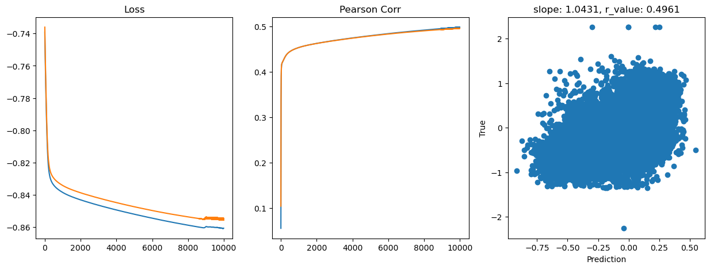
hid_dim: 512, lr: 0.75
Deleting previous model
Epoch 0, train_loss: 0.1908, val_loss: 0.6607, r_value: 0.0161
Epoch 500, train_loss: 0.1560, val_loss: 0.1566, r_value: 0.4662
Epoch 1000, train_loss: 0.1496, val_loss: 0.1512, r_value: 0.4841
Epoch 1500, train_loss: 0.1467, val_loss: 0.1486, r_value: 0.4953
Epoch 2000, train_loss: 0.1444, val_loss: 0.1468, r_value: 0.4998
Epoch 2500, train_loss: 0.1431, val_loss: 0.1453, r_value: 0.5035
Epoch 3000, train_loss: 0.1420, val_loss: 0.1442, r_value: 0.5070
Epoch 3500, train_loss: 0.1410, val_loss: 0.1433, r_value: 0.5102
Epoch 4000, train_loss: 0.1402, val_loss: 0.1427, r_value: 0.5128
Epoch 4500, train_loss: 0.1395, val_loss: 0.1422, r_value: 0.5151
Epoch 5000, train_loss: 0.1389, val_loss: 0.1419, r_value: 0.5172
Epoch 5500, train_loss: 0.1383, val_loss: 0.1416, r_value: 0.5189
Epoch 6000, train_loss: 0.1378, val_loss: 0.1415, r_value: 0.5204
Epoch 6500, train_loss: 0.1373, val_loss: 0.1413, r_value: 0.5220
Epoch 7000, train_loss: 0.1368, val_loss: 0.1412, r_value: 0.5232
Epoch 7500, train_loss: 0.1364, val_loss: 0.1412, r_value: 0.5244
Epoch 8000, train_loss: 0.1360, val_loss: 0.1412, r_value: 0.5253
Epoch 8500, train_loss: 0.1357, val_loss: 0.1413, r_value: 0.5261
Epoch 9000, train_loss: 0.1353, val_loss: 0.1413, r_value: 0.5269
Epoch 9500, train_loss: 0.1348, val_loss: 0.1413, r_value: 0.5277
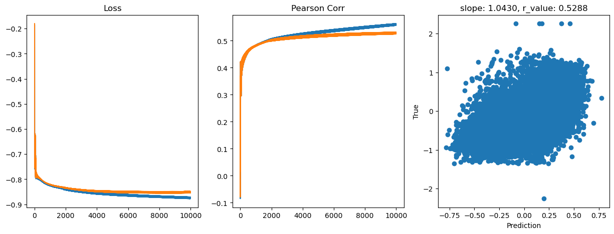
hid_dim: 512, lr: 0.5
Deleting previous model
Epoch 0, train_loss: 0.1871, val_loss: 0.3020, r_value: 0.2117
Epoch 500, train_loss: 0.1485, val_loss: 0.1495, r_value: 0.4665
Epoch 1000, train_loss: 0.1436, val_loss: 0.1453, r_value: 0.4839
Epoch 1500, train_loss: 0.1409, val_loss: 0.1429, r_value: 0.4947
Epoch 2000, train_loss: 0.1392, val_loss: 0.1414, r_value: 0.5034
Epoch 2500, train_loss: 0.1379, val_loss: 0.1402, r_value: 0.5100
Epoch 3000, train_loss: 0.1368, val_loss: 0.1394, r_value: 0.5144
Epoch 3500, train_loss: 0.1359, val_loss: 0.1387, r_value: 0.5176
Epoch 4000, train_loss: 0.1353, val_loss: 0.1384, r_value: 0.5199
Epoch 4500, train_loss: 0.1343, val_loss: 0.1377, r_value: 0.5220
Epoch 5000, train_loss: 0.1340, val_loss: 0.1377, r_value: 0.5236
Epoch 5500, train_loss: 0.1338, val_loss: 0.1382, r_value: 0.5249
Epoch 6000, train_loss: 0.1330, val_loss: 0.1375, r_value: 0.5262
Epoch 6500, train_loss: 0.1318, val_loss: 0.1363, r_value: 0.5274
Epoch 7000, train_loss: 0.1324, val_loss: 0.1377, r_value: 0.5281
Epoch 7500, train_loss: 0.1291, val_loss: 0.1341, r_value: 0.5288
Epoch 8000, train_loss: 0.1319, val_loss: 0.1378, r_value: 0.5297
Epoch 8500, train_loss: 0.1315, val_loss: 0.1377, r_value: 0.5305
Epoch 9000, train_loss: 0.1300, val_loss: 0.1362, r_value: 0.5311
Epoch 9500, train_loss: 0.1315, val_loss: 0.1383, r_value: 0.5313
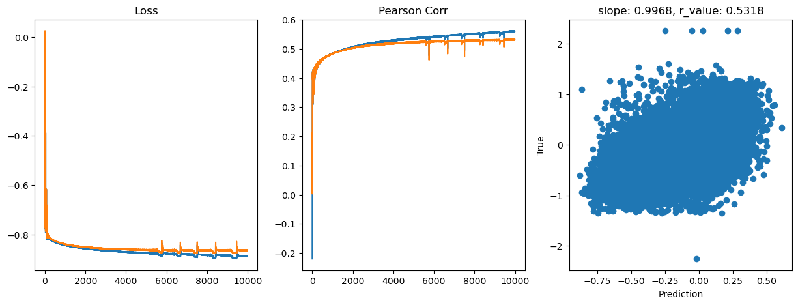
hid_dim: 512, lr: 0.1
Deleting previous model
Epoch 0, train_loss: 0.1875, val_loss: 0.1850, r_value: 0.2663
Epoch 500, train_loss: 0.1452, val_loss: 0.1465, r_value: 0.4566
Epoch 1000, train_loss: 0.1435, val_loss: 0.1448, r_value: 0.4658
Epoch 1500, train_loss: 0.1424, val_loss: 0.1436, r_value: 0.4730
Epoch 2000, train_loss: 0.1414, val_loss: 0.1427, r_value: 0.4791
Epoch 2500, train_loss: 0.1405, val_loss: 0.1418, r_value: 0.4842
Epoch 3000, train_loss: 0.1397, val_loss: 0.1411, r_value: 0.4886
Epoch 3500, train_loss: 0.1390, val_loss: 0.1405, r_value: 0.4925
Epoch 4000, train_loss: 0.1383, val_loss: 0.1399, r_value: 0.4960
Epoch 4500, train_loss: 0.1377, val_loss: 0.1393, r_value: 0.4992
Epoch 5000, train_loss: 0.1371, val_loss: 0.1388, r_value: 0.5020
Epoch 5500, train_loss: 0.1365, val_loss: 0.1383, r_value: 0.5046
Epoch 6000, train_loss: 0.1359, val_loss: 0.1379, r_value: 0.5068
Epoch 6500, train_loss: 0.1355, val_loss: 0.1374, r_value: 0.5088
Epoch 7000, train_loss: 0.1350, val_loss: 0.1371, r_value: 0.5106
Epoch 7500, train_loss: 0.1346, val_loss: 0.1368, r_value: 0.5121
Epoch 8000, train_loss: 0.1342, val_loss: 0.1365, r_value: 0.5134
Epoch 8500, train_loss: 0.1339, val_loss: 0.1362, r_value: 0.5145
Epoch 9000, train_loss: 0.1336, val_loss: 0.1360, r_value: 0.5155
Epoch 9500, train_loss: 0.1333, val_loss: 0.1358, r_value: 0.5164
hid_dim: 512, lr: 0.01
Deleting previous model
Epoch 0, train_loss: 0.1902, val_loss: 0.1894, r_value: 0.0326
Epoch 500, train_loss: 0.1530, val_loss: 0.1546, r_value: 0.4256
Epoch 1000, train_loss: 0.1480, val_loss: 0.1496, r_value: 0.4372
Epoch 1500, train_loss: 0.1466, val_loss: 0.1481, r_value: 0.4441
Epoch 2000, train_loss: 0.1458, val_loss: 0.1473, r_value: 0.4485
Epoch 2500, train_loss: 0.1453, val_loss: 0.1468, r_value: 0.4517
Epoch 3000, train_loss: 0.1449, val_loss: 0.1464, r_value: 0.4541
Epoch 3500, train_loss: 0.1446, val_loss: 0.1461, r_value: 0.4559
Epoch 4000, train_loss: 0.1443, val_loss: 0.1458, r_value: 0.4574
Epoch 4500, train_loss: 0.1441, val_loss: 0.1456, r_value: 0.4587
Epoch 5000, train_loss: 0.1439, val_loss: 0.1454, r_value: 0.4598
Epoch 5500, train_loss: 0.1438, val_loss: 0.1453, r_value: 0.4607
Epoch 6000, train_loss: 0.1436, val_loss: 0.1451, r_value: 0.4616
Epoch 6500, train_loss: 0.1435, val_loss: 0.1450, r_value: 0.4625
Epoch 7000, train_loss: 0.1433, val_loss: 0.1448, r_value: 0.4632
Epoch 7500, train_loss: 0.1432, val_loss: 0.1447, r_value: 0.4640
Epoch 8000, train_loss: 0.1431, val_loss: 0.1446, r_value: 0.4647
Epoch 8500, train_loss: 0.1430, val_loss: 0.1445, r_value: 0.4654
Epoch 9000, train_loss: 0.1429, val_loss: 0.1443, r_value: 0.4661
Epoch 9500, train_loss: 0.1427, val_loss: 0.1442, r_value: 0.4668
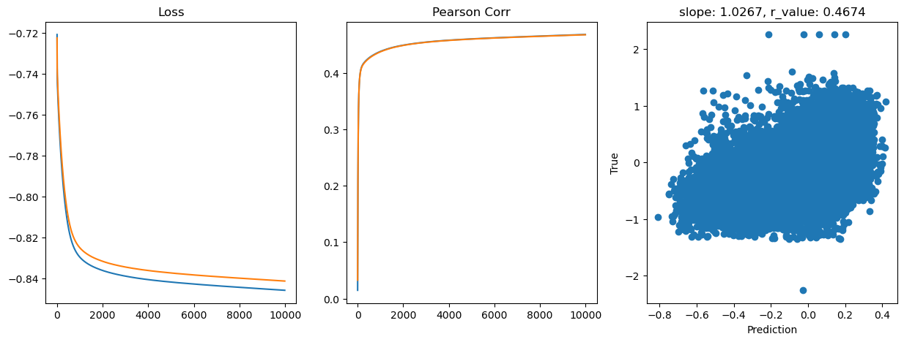
hid_dim: 512, lr: 0.05
Deleting previous model
Epoch 0, train_loss: 0.1858, val_loss: 0.1832, r_value: 0.1049
Epoch 500, train_loss: 0.1454, val_loss: 0.1469, r_value: 0.4513
Epoch 1000, train_loss: 0.1441, val_loss: 0.1456, r_value: 0.4589
Epoch 1500, train_loss: 0.1434, val_loss: 0.1449, r_value: 0.4627
Epoch 2000, train_loss: 0.1429, val_loss: 0.1444, r_value: 0.4658
Epoch 2500, train_loss: 0.1430, val_loss: 0.1447, r_value: 0.4687
Epoch 3000, train_loss: 0.1425, val_loss: 0.1442, r_value: 0.4715
Epoch 3500, train_loss: 0.1420, val_loss: 0.1437, r_value: 0.4741
Epoch 4000, train_loss: 0.1416, val_loss: 0.1433, r_value: 0.4766
Epoch 4500, train_loss: 0.1412, val_loss: 0.1429, r_value: 0.4791
Epoch 5000, train_loss: 0.1407, val_loss: 0.1425, r_value: 0.4815
Epoch 5500, train_loss: 0.1403, val_loss: 0.1421, r_value: 0.4838
Epoch 6000, train_loss: 0.1399, val_loss: 0.1418, r_value: 0.4859
Epoch 6500, train_loss: 0.1395, val_loss: 0.1414, r_value: 0.4880
Epoch 7000, train_loss: 0.1392, val_loss: 0.1411, r_value: 0.4899
Epoch 7500, train_loss: 0.1388, val_loss: 0.1408, r_value: 0.4917
Epoch 8000, train_loss: 0.1385, val_loss: 0.1405, r_value: 0.4934
Epoch 8500, train_loss: 0.1381, val_loss: 0.1402, r_value: 0.4950
Epoch 9000, train_loss: 0.1378, val_loss: 0.1399, r_value: 0.4965
Epoch 9500, train_loss: 0.1375, val_loss: 0.1397, r_value: 0.4980
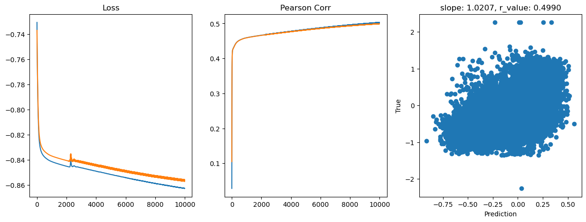
[14]:
# Try deeper FF
class Feedforward(torch.nn.Module):
def __init__(self, input_size, hidden_size):
super(Feedforward, self).__init__()
self.input_size = input_size
self.hidden_size = hidden_size
self.fc1 = torch.nn.Linear(self.input_size, self.hidden_size)
self.fc2 = torch.nn.Linear(self.hidden_size, self.hidden_size)
self.fc3 = torch.nn.Linear(self.hidden_size, self.hidden_size)
self.fc4 = torch.nn.Linear(self.hidden_size, self.hidden_size)
self.relu = torch.nn.ReLU()
self.fc5 = torch.nn.Linear(self.hidden_size, 1)
self.sigmoid = torch.nn.Sigmoid()
self.tanh = torch.nn.Tanh()
def forward(self, x):
hidden = self.relu(self.fc1(x))
hidden = self.relu(self.fc2(hidden))
hidden = self.relu(self.fc3(hidden))
hidden = self.relu(self.fc4(hidden))
output = self.tanh(self.fc5(hidden))
return output
[15]:
# model.train()
epoch = 10000
hid_dim_range = [128,256,512]
lr_range = [0.75,0.5,0.1,0.01,0.05]
for hid_dim in hid_dim_range:
for lr in lr_range:
print('\nhid_dim: {}, lr: {}'.format(hid_dim, lr))
if 'model' in globals():
print('Deleting previous model')
del model, criterion, optimizer
model = Feedforward(data.shape[1], hid_dim).to(device)
criterion = torch.nn.MSELoss()
optimizer = torch.optim.SGD(model.parameters(), lr = lr)
all_loss_train=[]
all_loss_val=[]
all_r_train=[]
all_r_val=[]
for epoch in range(epoch):
model.train()
optimizer.zero_grad()
# Forward pass
y_pred = model(X_train.to(device))
# Compute Loss
loss = criterion(y_pred.squeeze(), y_train.to(device))
# Backward pass
loss.backward()
optimizer.step()
all_loss_train.append(loss.item())
y_pred = y_pred.cpu().detach().numpy().squeeze()
_, _, r_value_train, _, _ = scipy.stats.linregress(y_pred, y_train)
all_r_train.append(r_value_train)
model.eval()
with torch.no_grad():
y_pred = model(X_test.to(device))
# Compute Loss
loss = criterion(y_pred.squeeze(), y_test.to(device))
all_loss_val.append(loss.item())
y_pred = y_pred.cpu().detach().numpy().squeeze()
slope, intercept, r_value, p_value, std_err = scipy.stats.linregress(y_pred, y_test)
all_r_val.append(r_value)
if epoch%500==0:
print('Epoch {}, train_loss: {:.4f}, val_loss: {:.4f}, r_value: {:.4f}'.format(epoch,all_loss_train[-1],all_loss_val[-1],r_value))
fig,ax=plt.subplots(1,3,figsize=(15,5))
ax[0].plot(np.log10(all_loss_train))
ax[0].plot(np.log10(all_loss_val))
ax[0].set_title('Loss')
ax[1].plot(all_r_train)
ax[1].plot(all_r_val)
ax[1].set_title('Pearson Corr')
ax[2].scatter(y_pred, y_test.cpu())
ax[2].set_xlabel('Prediction')
ax[2].set_ylabel('True')
ax[2].set_title('slope: {:.4f}, r_value: {:.4f}'.format(slope, r_value))
plt.show()
hid_dim: 128, lr: 0.75
Deleting previous model
Epoch 0, train_loss: 0.1823, val_loss: 0.1838, r_value: 0.1924
Epoch 500, train_loss: 0.1588, val_loss: 0.1564, r_value: 0.4524
Epoch 1000, train_loss: 0.1560, val_loss: 0.1555, r_value: 0.4598
Epoch 1500, train_loss: 0.1536, val_loss: 0.1543, r_value: 0.4662
Epoch 2000, train_loss: 0.1520, val_loss: 0.1534, r_value: 0.4733
Epoch 2500, train_loss: 0.1498, val_loss: 0.1517, r_value: 0.4793
Epoch 3000, train_loss: 0.1482, val_loss: 0.1502, r_value: 0.4841
Epoch 3500, train_loss: 0.1476, val_loss: 0.1488, r_value: 0.4887
Epoch 4000, train_loss: 0.1470, val_loss: 0.1470, r_value: 0.4950
Epoch 4500, train_loss: 0.1510, val_loss: 0.1525, r_value: 0.4764
Epoch 5000, train_loss: 0.1450, val_loss: 0.1477, r_value: 0.4957
Epoch 5500, train_loss: 0.1444, val_loss: 0.1428, r_value: 0.5038
Epoch 6000, train_loss: 0.1442, val_loss: 0.1469, r_value: 0.5053
Epoch 6500, train_loss: 0.1384, val_loss: 0.1416, r_value: 0.5059
Epoch 7000, train_loss: 0.1424, val_loss: 0.1456, r_value: 0.5063
Epoch 7500, train_loss: 0.1357, val_loss: 0.1392, r_value: 0.5046
Epoch 8000, train_loss: 0.1445, val_loss: 0.1436, r_value: 0.4978
Epoch 8500, train_loss: 0.1462, val_loss: 0.1375, r_value: 0.5068
Epoch 9000, train_loss: 0.1364, val_loss: 0.1365, r_value: 0.5146
Epoch 9500, train_loss: 0.1341, val_loss: 0.1361, r_value: 0.5157
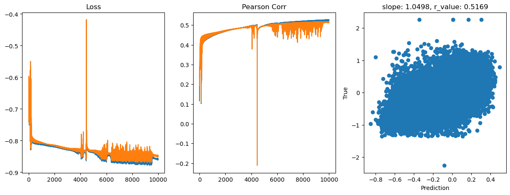
hid_dim: 128, lr: 0.5
Deleting previous model
Epoch 0, train_loss: 0.1824, val_loss: 0.1840, r_value: 0.2352
Epoch 500, train_loss: 0.1489, val_loss: 0.1511, r_value: 0.4465
Epoch 1000, train_loss: 0.1466, val_loss: 0.1482, r_value: 0.4627
Epoch 1500, train_loss: 0.1450, val_loss: 0.1463, r_value: 0.4735
Epoch 2000, train_loss: 0.1434, val_loss: 0.1446, r_value: 0.4804
Epoch 2500, train_loss: 0.1425, val_loss: 0.1436, r_value: 0.4854
Epoch 3000, train_loss: 0.1425, val_loss: 0.1429, r_value: 0.4906
Epoch 3500, train_loss: 0.1412, val_loss: 0.1422, r_value: 0.4945
Epoch 4000, train_loss: 0.1405, val_loss: 0.1433, r_value: 0.5006
Epoch 4500, train_loss: 0.1381, val_loss: 0.1422, r_value: 0.5001
Epoch 5000, train_loss: 0.1386, val_loss: 0.1399, r_value: 0.5054
Epoch 5500, train_loss: 0.1363, val_loss: 0.1379, r_value: 0.5029
Epoch 6000, train_loss: 0.1365, val_loss: 0.1391, r_value: 0.5123
Epoch 6500, train_loss: 0.1362, val_loss: 0.1385, r_value: 0.5140
Epoch 7000, train_loss: 0.1363, val_loss: 0.1396, r_value: 0.5150
Epoch 7500, train_loss: 0.1384, val_loss: 0.1431, r_value: 0.4806
Epoch 8000, train_loss: 0.1330, val_loss: 0.1358, r_value: 0.5150
Epoch 8500, train_loss: 0.1386, val_loss: 0.1397, r_value: 0.5157
Epoch 9000, train_loss: 0.1329, val_loss: 0.1355, r_value: 0.5169
Epoch 9500, train_loss: 0.1343, val_loss: 0.1383, r_value: 0.5205
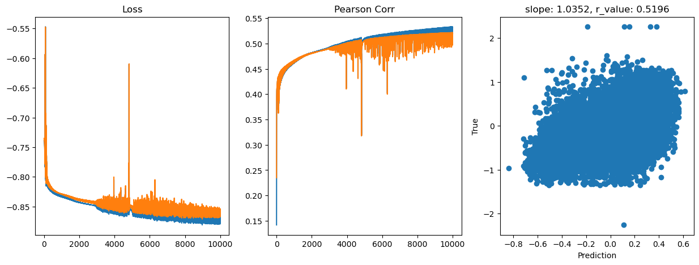
hid_dim: 128, lr: 0.1
Deleting previous model
Epoch 0, train_loss: 0.1972, val_loss: 0.1922, r_value: -0.0228
Epoch 500, train_loss: 0.1475, val_loss: 0.1487, r_value: 0.4403
Epoch 1000, train_loss: 0.1456, val_loss: 0.1468, r_value: 0.4565
Epoch 1500, train_loss: 0.1445, val_loss: 0.1457, r_value: 0.4629
Epoch 2000, train_loss: 0.1436, val_loss: 0.1448, r_value: 0.4672
Epoch 2500, train_loss: 0.1430, val_loss: 0.1442, r_value: 0.4711
Epoch 3000, train_loss: 0.1424, val_loss: 0.1436, r_value: 0.4747
Epoch 3500, train_loss: 0.1418, val_loss: 0.1430, r_value: 0.4781
Epoch 4000, train_loss: 0.1412, val_loss: 0.1425, r_value: 0.4814
Epoch 4500, train_loss: 0.1407, val_loss: 0.1420, r_value: 0.4845
Epoch 5000, train_loss: 0.1402, val_loss: 0.1415, r_value: 0.4874
Epoch 5500, train_loss: 0.1396, val_loss: 0.1410, r_value: 0.4901
Epoch 6000, train_loss: 0.1391, val_loss: 0.1405, r_value: 0.4926
Epoch 6500, train_loss: 0.1387, val_loss: 0.1402, r_value: 0.4949
Epoch 7000, train_loss: 0.1383, val_loss: 0.1398, r_value: 0.4972
Epoch 7500, train_loss: 0.1379, val_loss: 0.1394, r_value: 0.4994
Epoch 8000, train_loss: 0.1374, val_loss: 0.1391, r_value: 0.5016
Epoch 8500, train_loss: 0.1370, val_loss: 0.1387, r_value: 0.5038
Epoch 9000, train_loss: 0.1366, val_loss: 0.1385, r_value: 0.5059
Epoch 9500, train_loss: 0.1361, val_loss: 0.1380, r_value: 0.5078
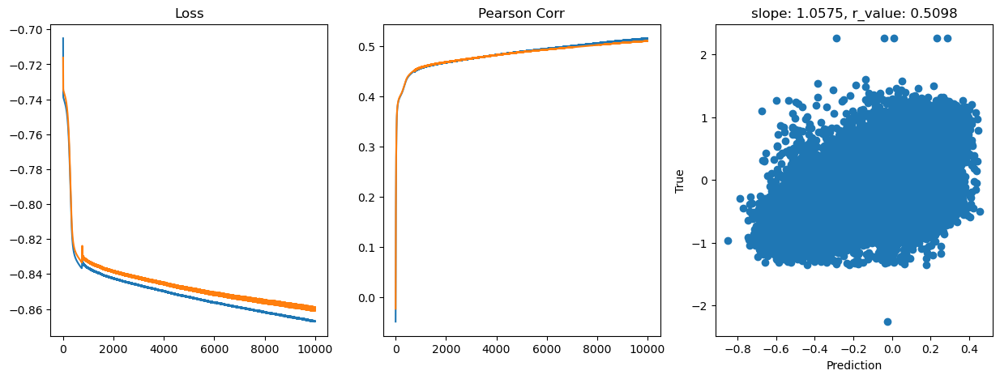
hid_dim: 128, lr: 0.01
Deleting previous model
Epoch 0, train_loss: 0.1834, val_loss: 0.1853, r_value: -0.2359
Epoch 500, train_loss: 0.1816, val_loss: 0.1834, r_value: 0.3388
Epoch 1000, train_loss: 0.1804, val_loss: 0.1822, r_value: 0.3865
Epoch 1500, train_loss: 0.1786, val_loss: 0.1804, r_value: 0.4007
Epoch 2000, train_loss: 0.1755, val_loss: 0.1772, r_value: 0.4089
Epoch 2500, train_loss: 0.1692, val_loss: 0.1710, r_value: 0.4173
Epoch 3000, train_loss: 0.1597, val_loss: 0.1614, r_value: 0.4241
Epoch 3500, train_loss: 0.1513, val_loss: 0.1530, r_value: 0.4315
Epoch 4000, train_loss: 0.1479, val_loss: 0.1495, r_value: 0.4389
Epoch 4500, train_loss: 0.1467, val_loss: 0.1482, r_value: 0.4441
Epoch 5000, train_loss: 0.1461, val_loss: 0.1475, r_value: 0.4475
Epoch 5500, train_loss: 0.1457, val_loss: 0.1471, r_value: 0.4498
Epoch 6000, train_loss: 0.1454, val_loss: 0.1468, r_value: 0.4516
Epoch 6500, train_loss: 0.1452, val_loss: 0.1465, r_value: 0.4530
Epoch 7000, train_loss: 0.1450, val_loss: 0.1463, r_value: 0.4542
Epoch 7500, train_loss: 0.1448, val_loss: 0.1462, r_value: 0.4553
Epoch 8000, train_loss: 0.1447, val_loss: 0.1460, r_value: 0.4562
Epoch 8500, train_loss: 0.1445, val_loss: 0.1459, r_value: 0.4570
Epoch 9000, train_loss: 0.1444, val_loss: 0.1457, r_value: 0.4579
Epoch 9500, train_loss: 0.1443, val_loss: 0.1456, r_value: 0.4587
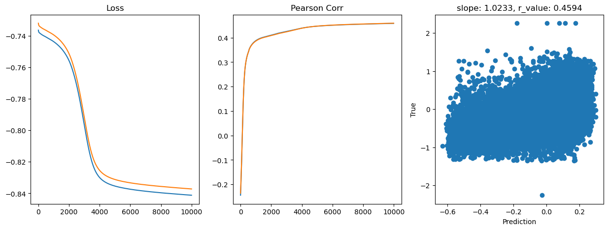
hid_dim: 128, lr: 0.05
Deleting previous model
Epoch 0, train_loss: 0.1844, val_loss: 0.1855, r_value: -0.0339
Epoch 500, train_loss: 0.1709, val_loss: 0.1725, r_value: 0.4039
Epoch 1000, train_loss: 0.1479, val_loss: 0.1493, r_value: 0.4363
Epoch 1500, train_loss: 0.1458, val_loss: 0.1472, r_value: 0.4492
Epoch 2000, train_loss: 0.1446, val_loss: 0.1460, r_value: 0.4565
Epoch 2500, train_loss: 0.1437, val_loss: 0.1451, r_value: 0.4617
Epoch 3000, train_loss: 0.1431, val_loss: 0.1444, r_value: 0.4655
Epoch 3500, train_loss: 0.1425, val_loss: 0.1439, r_value: 0.4688
Epoch 4000, train_loss: 0.1419, val_loss: 0.1434, r_value: 0.4717
Epoch 4500, train_loss: 0.1414, val_loss: 0.1429, r_value: 0.4745
Epoch 5000, train_loss: 0.1409, val_loss: 0.1423, r_value: 0.4776
Epoch 5500, train_loss: 0.1411, val_loss: 0.1423, r_value: 0.4798
Epoch 6000, train_loss: 0.1408, val_loss: 0.1420, r_value: 0.4822
Epoch 6500, train_loss: 0.1404, val_loss: 0.1417, r_value: 0.4844
Epoch 7000, train_loss: 0.1401, val_loss: 0.1414, r_value: 0.4864
Epoch 7500, train_loss: 0.1398, val_loss: 0.1411, r_value: 0.4883
Epoch 8000, train_loss: 0.1395, val_loss: 0.1408, r_value: 0.4901
Epoch 8500, train_loss: 0.1392, val_loss: 0.1405, r_value: 0.4920
Epoch 9000, train_loss: 0.1389, val_loss: 0.1402, r_value: 0.4937
Epoch 9500, train_loss: 0.1386, val_loss: 0.1399, r_value: 0.4954
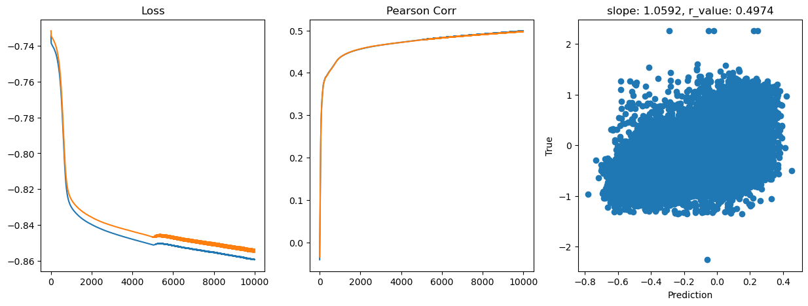
hid_dim: 256, lr: 0.75
Deleting previous model
Epoch 0, train_loss: 0.1854, val_loss: 0.1890, r_value: -0.2486
Epoch 500, train_loss: 0.1587, val_loss: 0.1572, r_value: 0.4538
Epoch 1000, train_loss: 0.1548, val_loss: 0.1555, r_value: 0.4659
Epoch 1500, train_loss: 0.1518, val_loss: 0.1534, r_value: 0.4754
Epoch 2000, train_loss: 0.1495, val_loss: 0.1514, r_value: 0.4823
Epoch 2500, train_loss: 0.1474, val_loss: 0.1491, r_value: 0.4899
Epoch 3000, train_loss: 0.1412, val_loss: 0.1421, r_value: 0.4947
Epoch 3500, train_loss: 0.1550, val_loss: 0.1552, r_value: 0.4857
Epoch 4000, train_loss: 0.1420, val_loss: 0.1473, r_value: 0.4894
Epoch 4500, train_loss: 0.1353, val_loss: 0.1378, r_value: 0.5060
Epoch 5000, train_loss: 0.1425, val_loss: 0.1447, r_value: 0.5064
Epoch 5500, train_loss: 0.1410, val_loss: 0.1450, r_value: 0.5103
Epoch 6000, train_loss: 0.1360, val_loss: 0.1388, r_value: 0.5132
Epoch 6500, train_loss: 0.1369, val_loss: 0.1373, r_value: 0.5113
Epoch 7000, train_loss: 0.1404, val_loss: 0.1436, r_value: 0.5155
Epoch 7500, train_loss: 0.1334, val_loss: 0.1366, r_value: 0.5119
Epoch 8000, train_loss: 0.1375, val_loss: 0.1412, r_value: 0.5187
Epoch 8500, train_loss: 0.1330, val_loss: 0.1361, r_value: 0.5206
Epoch 9000, train_loss: 0.1390, val_loss: 0.1421, r_value: 0.5209
Epoch 9500, train_loss: 0.1322, val_loss: 0.1358, r_value: 0.5167
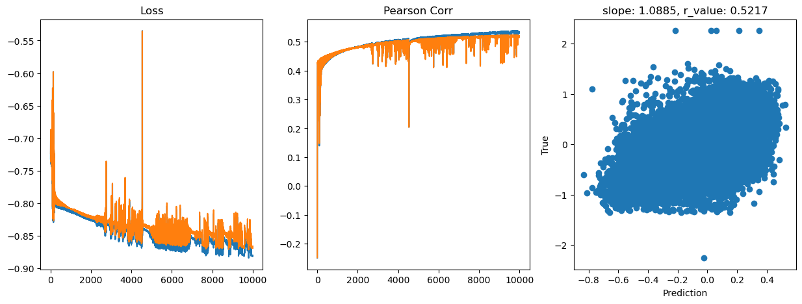
hid_dim: 256, lr: 0.5
Deleting previous model
Epoch 0, train_loss: 0.1823, val_loss: 0.1839, r_value: 0.2372
Epoch 500, train_loss: 0.1497, val_loss: 0.1501, r_value: 0.4585
Epoch 1000, train_loss: 0.1461, val_loss: 0.1475, r_value: 0.4726
Epoch 1500, train_loss: 0.1438, val_loss: 0.1456, r_value: 0.4814
Epoch 2000, train_loss: 0.1425, val_loss: 0.1444, r_value: 0.4886
Epoch 2500, train_loss: 0.1411, val_loss: 0.1432, r_value: 0.4963
Epoch 3000, train_loss: 0.1396, val_loss: 0.1414, r_value: 0.5006
Epoch 3500, train_loss: 0.1413, val_loss: 0.1433, r_value: 0.5074
Epoch 4000, train_loss: 0.1374, val_loss: 0.1397, r_value: 0.5112
Epoch 4500, train_loss: 0.1379, val_loss: 0.1402, r_value: 0.5129
Epoch 5000, train_loss: 0.1371, val_loss: 0.1393, r_value: 0.5124
Epoch 5500, train_loss: 0.1339, val_loss: 0.1369, r_value: 0.5089
Epoch 6000, train_loss: 0.1360, val_loss: 0.1388, r_value: 0.5179
Epoch 6500, train_loss: 0.1366, val_loss: 0.1397, r_value: 0.5188
Epoch 7000, train_loss: 0.1368, val_loss: 0.1391, r_value: 0.5199
Epoch 7500, train_loss: 0.1350, val_loss: 0.1386, r_value: 0.5212
Epoch 8000, train_loss: 0.1351, val_loss: 0.1384, r_value: 0.5192
Epoch 8500, train_loss: 0.1331, val_loss: 0.1372, r_value: 0.5095
Epoch 9000, train_loss: 0.1336, val_loss: 0.1376, r_value: 0.5201
Epoch 9500, train_loss: 0.1310, val_loss: 0.1350, r_value: 0.5212
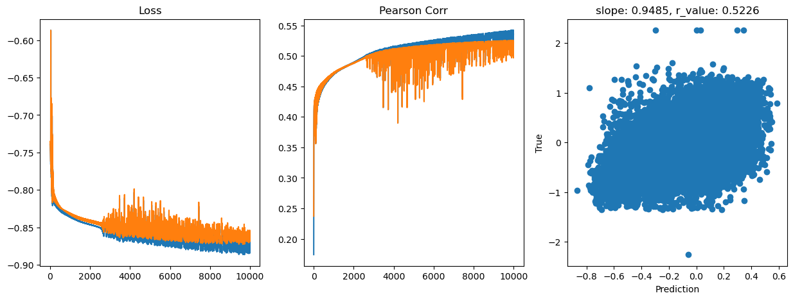
hid_dim: 256, lr: 0.1
Deleting previous model
Epoch 0, train_loss: 0.1824, val_loss: 0.1841, r_value: 0.1137
Epoch 500, train_loss: 0.1458, val_loss: 0.1472, r_value: 0.4493
Epoch 1000, train_loss: 0.1450, val_loss: 0.1465, r_value: 0.4604
Epoch 1500, train_loss: 0.1440, val_loss: 0.1455, r_value: 0.4666
Epoch 2000, train_loss: 0.1432, val_loss: 0.1447, r_value: 0.4715
Epoch 2500, train_loss: 0.1423, val_loss: 0.1439, r_value: 0.4762
Epoch 3000, train_loss: 0.1416, val_loss: 0.1432, r_value: 0.4807
Epoch 3500, train_loss: 0.1409, val_loss: 0.1425, r_value: 0.4852
Epoch 4000, train_loss: 0.1402, val_loss: 0.1419, r_value: 0.4893
Epoch 4500, train_loss: 0.1395, val_loss: 0.1413, r_value: 0.4932
Epoch 5000, train_loss: 0.1389, val_loss: 0.1407, r_value: 0.4967
Epoch 5500, train_loss: 0.1383, val_loss: 0.1402, r_value: 0.4999
Epoch 6000, train_loss: 0.1376, val_loss: 0.1396, r_value: 0.5028
Epoch 6500, train_loss: 0.1370, val_loss: 0.1391, r_value: 0.5055
Epoch 7000, train_loss: 0.1365, val_loss: 0.1387, r_value: 0.5080
Epoch 7500, train_loss: 0.1360, val_loss: 0.1383, r_value: 0.5102
Epoch 8000, train_loss: 0.1354, val_loss: 0.1378, r_value: 0.5122
Epoch 8500, train_loss: 0.1350, val_loss: 0.1375, r_value: 0.5138
Epoch 9000, train_loss: 0.1346, val_loss: 0.1372, r_value: 0.5152
Epoch 9500, train_loss: 0.1343, val_loss: 0.1369, r_value: 0.5165
hid_dim: 256, lr: 0.01
Deleting previous model
Epoch 0, train_loss: 0.1834, val_loss: 0.1850, r_value: -0.2138
Epoch 500, train_loss: 0.1808, val_loss: 0.1825, r_value: 0.4074
Epoch 1000, train_loss: 0.1779, val_loss: 0.1797, r_value: 0.4218
Epoch 1500, train_loss: 0.1725, val_loss: 0.1742, r_value: 0.4248
Epoch 2000, train_loss: 0.1624, val_loss: 0.1640, r_value: 0.4276
Epoch 2500, train_loss: 0.1521, val_loss: 0.1536, r_value: 0.4321
Epoch 3000, train_loss: 0.1481, val_loss: 0.1495, r_value: 0.4383
Epoch 3500, train_loss: 0.1469, val_loss: 0.1483, r_value: 0.4432
Epoch 4000, train_loss: 0.1463, val_loss: 0.1477, r_value: 0.4465
Epoch 4500, train_loss: 0.1459, val_loss: 0.1472, r_value: 0.4488
Epoch 5000, train_loss: 0.1456, val_loss: 0.1469, r_value: 0.4507
Epoch 5500, train_loss: 0.1453, val_loss: 0.1467, r_value: 0.4524
Epoch 6000, train_loss: 0.1451, val_loss: 0.1464, r_value: 0.4538
Epoch 6500, train_loss: 0.1448, val_loss: 0.1462, r_value: 0.4551
Epoch 7000, train_loss: 0.1447, val_loss: 0.1460, r_value: 0.4562
Epoch 7500, train_loss: 0.1445, val_loss: 0.1458, r_value: 0.4572
Epoch 8000, train_loss: 0.1443, val_loss: 0.1457, r_value: 0.4582
Epoch 8500, train_loss: 0.1442, val_loss: 0.1455, r_value: 0.4591
Epoch 9000, train_loss: 0.1440, val_loss: 0.1454, r_value: 0.4599
Epoch 9500, train_loss: 0.1439, val_loss: 0.1453, r_value: 0.4606
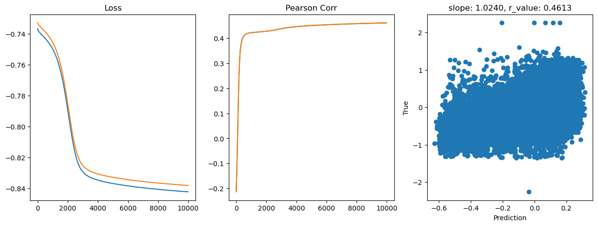
hid_dim: 256, lr: 0.05
Deleting previous model
Epoch 0, train_loss: 0.1841, val_loss: 0.1851, r_value: 0.1820
Epoch 500, train_loss: 0.1507, val_loss: 0.1521, r_value: 0.4349
Epoch 1000, train_loss: 0.1456, val_loss: 0.1469, r_value: 0.4511
Epoch 1500, train_loss: 0.1443, val_loss: 0.1456, r_value: 0.4585
Epoch 2000, train_loss: 0.1435, val_loss: 0.1448, r_value: 0.4635
Epoch 2500, train_loss: 0.1428, val_loss: 0.1441, r_value: 0.4673
Epoch 3000, train_loss: 0.1422, val_loss: 0.1435, r_value: 0.4707
Epoch 3500, train_loss: 0.1416, val_loss: 0.1430, r_value: 0.4738
Epoch 4000, train_loss: 0.1416, val_loss: 0.1428, r_value: 0.4765
Epoch 4500, train_loss: 0.1413, val_loss: 0.1426, r_value: 0.4790
Epoch 5000, train_loss: 0.1409, val_loss: 0.1422, r_value: 0.4814
Epoch 5500, train_loss: 0.1406, val_loss: 0.1419, r_value: 0.4837
Epoch 6000, train_loss: 0.1401, val_loss: 0.1415, r_value: 0.4858
Epoch 6500, train_loss: 0.1398, val_loss: 0.1411, r_value: 0.4880
Epoch 7000, train_loss: 0.1394, val_loss: 0.1408, r_value: 0.4901
Epoch 7500, train_loss: 0.1390, val_loss: 0.1405, r_value: 0.4921
Epoch 8000, train_loss: 0.1387, val_loss: 0.1402, r_value: 0.4940
Epoch 8500, train_loss: 0.1383, val_loss: 0.1398, r_value: 0.4957
Epoch 9000, train_loss: 0.1380, val_loss: 0.1395, r_value: 0.4975
Epoch 9500, train_loss: 0.1376, val_loss: 0.1392, r_value: 0.4992
hid_dim: 512, lr: 0.75
Deleting previous model
Epoch 0, train_loss: 0.1826, val_loss: 0.1840, r_value: 0.3779
Epoch 500, train_loss: 0.1557, val_loss: 0.1588, r_value: 0.4407
Epoch 1000, train_loss: 0.1528, val_loss: 0.1545, r_value: 0.4622
Epoch 1500, train_loss: 0.1502, val_loss: 0.1516, r_value: 0.4754
Epoch 2000, train_loss: 0.1483, val_loss: 0.1501, r_value: 0.4830
Epoch 2500, train_loss: 0.1478, val_loss: 0.1489, r_value: 0.4910
Epoch 3000, train_loss: 0.1453, val_loss: 0.1469, r_value: 0.4976
Epoch 3500, train_loss: 0.1421, val_loss: 0.1462, r_value: 0.4990
Epoch 4000, train_loss: 0.1363, val_loss: 0.1382, r_value: 0.5105
Epoch 4500, train_loss: 0.1368, val_loss: 0.1406, r_value: 0.5128
Epoch 5000, train_loss: 0.1421, val_loss: 0.1482, r_value: 0.4841
Epoch 5500, train_loss: 0.1372, val_loss: 0.1428, r_value: 0.5116
Epoch 6000, train_loss: 0.1416, val_loss: 0.1464, r_value: 0.5134
Epoch 6500, train_loss: 0.1405, val_loss: 0.1478, r_value: 0.4916
Epoch 7000, train_loss: 0.1385, val_loss: 0.1445, r_value: 0.5168
Epoch 7500, train_loss: 0.1318, val_loss: 0.1365, r_value: 0.5228
Epoch 8000, train_loss: 0.1436, val_loss: 0.1462, r_value: 0.5013
Epoch 8500, train_loss: 0.1391, val_loss: 0.1479, r_value: 0.5128
Epoch 9000, train_loss: 0.1300, val_loss: 0.1364, r_value: 0.5165
Epoch 9500, train_loss: 0.1299, val_loss: 0.1350, r_value: 0.5266
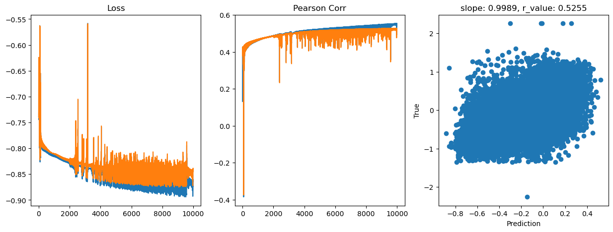
hid_dim: 512, lr: 0.5
Deleting previous model
Epoch 0, train_loss: 0.1835, val_loss: 0.1845, r_value: 0.0661
Epoch 500, train_loss: 0.1480, val_loss: 0.1502, r_value: 0.4544
Epoch 1000, train_loss: 0.1449, val_loss: 0.1460, r_value: 0.4766
Epoch 1500, train_loss: 0.1425, val_loss: 0.1434, r_value: 0.4885
Epoch 2000, train_loss: 0.1417, val_loss: 0.1423, r_value: 0.4973
Epoch 2500, train_loss: 0.1392, val_loss: 0.1408, r_value: 0.5002
Epoch 3000, train_loss: 0.1384, val_loss: 0.1402, r_value: 0.5085
Epoch 3500, train_loss: 0.1363, val_loss: 0.1385, r_value: 0.5105
Epoch 4000, train_loss: 0.1372, val_loss: 0.1397, r_value: 0.5167
Epoch 4500, train_loss: 0.1359, val_loss: 0.1386, r_value: 0.5166
Epoch 5000, train_loss: 0.1355, val_loss: 0.1386, r_value: 0.5206
Epoch 5500, train_loss: 0.1326, val_loss: 0.1350, r_value: 0.5214
Epoch 6000, train_loss: 0.1313, val_loss: 0.1345, r_value: 0.5222
Epoch 6500, train_loss: 0.1336, val_loss: 0.1378, r_value: 0.5250
Epoch 7000, train_loss: 0.1341, val_loss: 0.1378, r_value: 0.5228
Epoch 7500, train_loss: 0.1337, val_loss: 0.1389, r_value: 0.5230
Epoch 8000, train_loss: 0.1327, val_loss: 0.1393, r_value: 0.5248
Epoch 8500, train_loss: 0.1309, val_loss: 0.1365, r_value: 0.5216
Epoch 9000, train_loss: 0.1315, val_loss: 0.1368, r_value: 0.5292
Epoch 9500, train_loss: 0.1314, val_loss: 0.1367, r_value: 0.5274
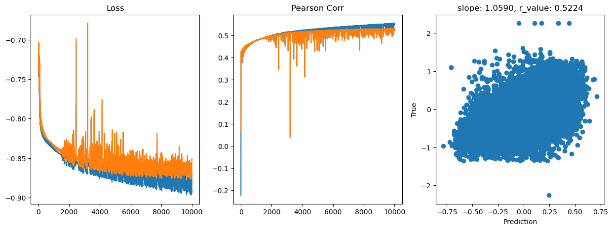
hid_dim: 512, lr: 0.1
Deleting previous model
Epoch 0, train_loss: 0.1826, val_loss: 0.1842, r_value: 0.0892
Epoch 500, train_loss: 0.1468, val_loss: 0.1481, r_value: 0.4540
Epoch 1000, train_loss: 0.1445, val_loss: 0.1459, r_value: 0.4648
Epoch 1500, train_loss: 0.1431, val_loss: 0.1446, r_value: 0.4718
Epoch 2000, train_loss: 0.1421, val_loss: 0.1436, r_value: 0.4778
Epoch 2500, train_loss: 0.1411, val_loss: 0.1427, r_value: 0.4831
Epoch 3000, train_loss: 0.1403, val_loss: 0.1420, r_value: 0.4877
Epoch 3500, train_loss: 0.1396, val_loss: 0.1413, r_value: 0.4918
Epoch 4000, train_loss: 0.1389, val_loss: 0.1407, r_value: 0.4957
Epoch 4500, train_loss: 0.1382, val_loss: 0.1401, r_value: 0.4995
Epoch 5000, train_loss: 0.1375, val_loss: 0.1395, r_value: 0.5032
Epoch 5500, train_loss: 0.1369, val_loss: 0.1390, r_value: 0.5067
Epoch 6000, train_loss: 0.1362, val_loss: 0.1384, r_value: 0.5097
Epoch 6500, train_loss: 0.1356, val_loss: 0.1379, r_value: 0.5124
Epoch 7000, train_loss: 0.1350, val_loss: 0.1375, r_value: 0.5146
Epoch 7500, train_loss: 0.1345, val_loss: 0.1371, r_value: 0.5164
Epoch 8000, train_loss: 0.1341, val_loss: 0.1368, r_value: 0.5179
Epoch 8500, train_loss: 0.1337, val_loss: 0.1365, r_value: 0.5191
Epoch 9000, train_loss: 0.1333, val_loss: 0.1363, r_value: 0.5202
Epoch 9500, train_loss: 0.1329, val_loss: 0.1360, r_value: 0.5212
hid_dim: 512, lr: 0.01
Deleting previous model
Epoch 0, train_loss: 0.1827, val_loss: 0.1845, r_value: -0.0949
Epoch 500, train_loss: 0.1791, val_loss: 0.1809, r_value: 0.4072
Epoch 1000, train_loss: 0.1732, val_loss: 0.1749, r_value: 0.4166
Epoch 1500, train_loss: 0.1618, val_loss: 0.1634, r_value: 0.4232
Epoch 2000, train_loss: 0.1512, val_loss: 0.1527, r_value: 0.4312
Epoch 2500, train_loss: 0.1477, val_loss: 0.1492, r_value: 0.4393
Epoch 3000, train_loss: 0.1466, val_loss: 0.1480, r_value: 0.4447
Epoch 3500, train_loss: 0.1460, val_loss: 0.1473, r_value: 0.4484
Epoch 4000, train_loss: 0.1455, val_loss: 0.1469, r_value: 0.4512
Epoch 4500, train_loss: 0.1451, val_loss: 0.1465, r_value: 0.4535
Epoch 5000, train_loss: 0.1448, val_loss: 0.1461, r_value: 0.4555
Epoch 5500, train_loss: 0.1445, val_loss: 0.1458, r_value: 0.4573
Epoch 6000, train_loss: 0.1442, val_loss: 0.1456, r_value: 0.4589
Epoch 6500, train_loss: 0.1440, val_loss: 0.1453, r_value: 0.4603
Epoch 7000, train_loss: 0.1438, val_loss: 0.1451, r_value: 0.4616
Epoch 7500, train_loss: 0.1436, val_loss: 0.1449, r_value: 0.4627
Epoch 8000, train_loss: 0.1434, val_loss: 0.1447, r_value: 0.4638
Epoch 8500, train_loss: 0.1433, val_loss: 0.1446, r_value: 0.4647
Epoch 9000, train_loss: 0.1431, val_loss: 0.1444, r_value: 0.4656
Epoch 9500, train_loss: 0.1430, val_loss: 0.1443, r_value: 0.4664
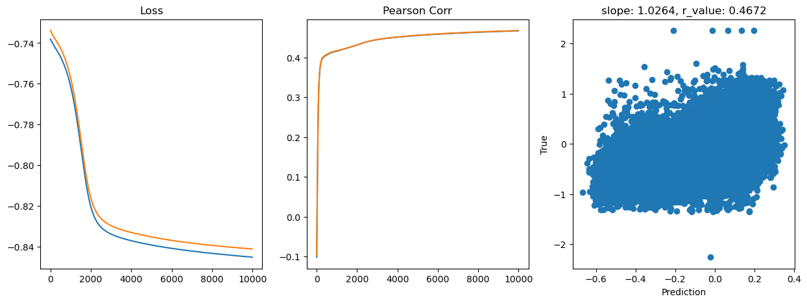
hid_dim: 512, lr: 0.05
Deleting previous model
Epoch 0, train_loss: 0.1837, val_loss: 0.1852, r_value: 0.0732
Epoch 500, train_loss: 0.1470, val_loss: 0.1484, r_value: 0.4426
Epoch 1000, train_loss: 0.1447, val_loss: 0.1461, r_value: 0.4556
Epoch 1500, train_loss: 0.1437, val_loss: 0.1451, r_value: 0.4617
Epoch 2000, train_loss: 0.1430, val_loss: 0.1444, r_value: 0.4658
Epoch 2500, train_loss: 0.1424, val_loss: 0.1438, r_value: 0.4694
Epoch 3000, train_loss: 0.1423, val_loss: 0.1436, r_value: 0.4724
Epoch 3500, train_loss: 0.1419, val_loss: 0.1431, r_value: 0.4755
Epoch 4000, train_loss: 0.1414, val_loss: 0.1427, r_value: 0.4786
Epoch 4500, train_loss: 0.1409, val_loss: 0.1422, r_value: 0.4815
Epoch 5000, train_loss: 0.1404, val_loss: 0.1418, r_value: 0.4844
Epoch 5500, train_loss: 0.1399, val_loss: 0.1413, r_value: 0.4873
Epoch 6000, train_loss: 0.1394, val_loss: 0.1408, r_value: 0.4901
Epoch 6500, train_loss: 0.1390, val_loss: 0.1404, r_value: 0.4927
Epoch 7000, train_loss: 0.1385, val_loss: 0.1399, r_value: 0.4953
Epoch 7500, train_loss: 0.1380, val_loss: 0.1395, r_value: 0.4976
Epoch 8000, train_loss: 0.1376, val_loss: 0.1391, r_value: 0.4999
Epoch 8500, train_loss: 0.1371, val_loss: 0.1388, r_value: 0.5021
Epoch 9000, train_loss: 0.1367, val_loss: 0.1384, r_value: 0.5041
Epoch 9500, train_loss: 0.1362, val_loss: 0.1380, r_value: 0.5060

[15]:
# Let's try the sklearn MLP implementation
from sklearn.neural_network import MLPRegressor
regr = MLPRegressor(random_state=1, max_iter=1000).fit(X_train, y_train)
print(regr)
MLPRegressor(max_iter=1000, random_state=1)
[16]:
y_pred = regr.predict(X_test)
slope, intercept, r_value, p_value, std_err = scipy.stats.linregress(y_pred, y_test)
fig,ax=plt.subplots(figsize=(5,5))
ax.scatter(y_pred, y_test.cpu())
ax.set_xlabel('Prediction')
ax.set_ylabel('True')
ax.set_title('slope: {:.4f}, r_value: {:.4f}'.format(slope, r_value))
[16]:
Text(0.5, 1.0, 'slope: 0.9208, r_value: 0.5133')
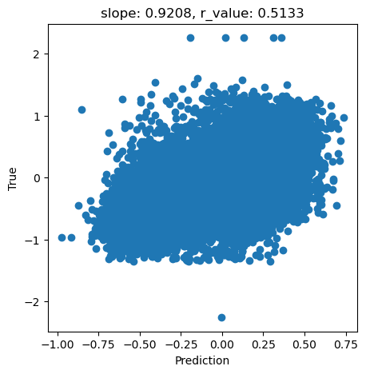
[17]:
regr = MLPRegressor(hidden_layer_sizes=(256,256,256),random_state=1, max_iter=1000).fit(X_train, y_train)
[18]:
y_pred = regr.predict(X_test)
slope, intercept, r_value, p_value, std_err = scipy.stats.linregress(y_pred, y_test)
fig,ax=plt.subplots(figsize=(5,5))
ax.scatter(y_pred, y_test.cpu())
ax.set_xlabel('Prediction')
ax.set_ylabel('True')
ax.set_title('slope: {:.4f}, r_value: {:.4f}'.format(slope, r_value))
[18]:
Text(0.5, 1.0, 'slope: 0.3976, r_value: 0.3469')
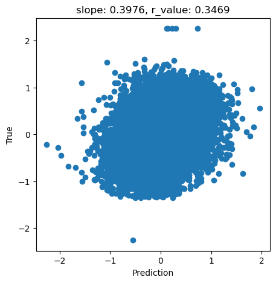
[ ]: